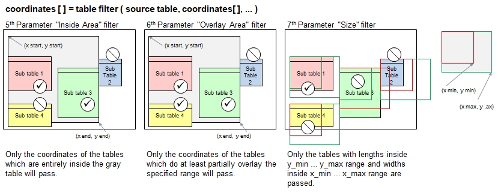

Function Names
table filter, table filter ignore caseDescription
This function takes the coordinates from table explore() and filters those out which do not qualify the selection criteria. Four ifferent selection criteria are supported.
- Checking for header names to exist in the header row(s) in the sub-tables
- Checking sub-tables entirely located in the Inside Area.
- Checking sub-tables partially located in teh Overlay Area.
- Checking sub-tables for minimum and maximum number of rows and columns

The coordinates of all sub-tables not meeting the specified filter criteria will be removed. Optionally, the size of the
sub-tables can be adjusted in order to include or excluded selected contents.
Call as: function
Restrictions
Indirect parameter passing is disabled
Parameter count
2-6
Parameters
| No. | Type | Description |
|---|---|---|
| 1. input |
literal | Name of existing table It is assumed that this table contains one or more sub-tables. |
| 2. input |
matrix of numerals | Coordinates of identified sub-tables The matrix of numerals is a parameter set which contains 0, 1 or more parameter sets where each of them refers to a found sub-table and contain 4 numerals marking top left and bottom right coordinates: { { x start, y start, x end, y end }, { x start, y start, x end, y end }, ... }. Normally, provide the return value from table explore() in this parameter. |
| Opt. 3 input |
parameter set or literal | Header search pattern Specify the header names wich must exist in the sub-tables. All sub-tables not containing these header names will be removed from the coordinates list. The ordering of the header names does not matter. If no value is provided, then no sub-tables will be disqualified here. The function table filter ignore case will ignore cases in the comparison.
|
| Opt. 4 input |
numeral | Header rows Number of header rows assumed in the sub-tables. The comparison described above is applied on all header rows. |
| Opt. 5 input |
parameter set of numerals | Inside area filter The Inside area describes a rectangular area in the table where only those entire sub-tables located inside this area will be kept and the other sub-tables filtered out. |
| Opt. 6 input |
parameter set of numerals | Overlay area filter The Overlay area describes a rectangular area in the table where at least parts (min. 1 field) of the sub-tables located inside this area will be kept and the other sub-tables filtered out. |
| Opt. 7 input |
parameter set of numerals | Size filter The Size filter rules the minimum and maximum number of rows and columns the sub-tables must have. All smaller and larger sub-tables will be filtered out.
For example, you can filter out some text fields otherwise interpreted as very small tables consisting of a small number of rows and columns. |
| Opt. 8 input |
parameter set of numerals | Size adjustment The Size adjustment is not a filter criterion like in the previous parameters. You can specify and maximum for both columns and rows. If the remaining
sub-tables are larger, then the size will be reduced. If the sub-tables are smaller, then the size will be increased. |
Return value
| Type | Description |
|---|---|
| matrix of numerals | Coordinates of identified sub-tables The return value contains the remaining coordinates as provided in the 2nd function parameters and possibly some of the sub-table coordinates removed. |
Examples
define procedure( print coordinates, { { coordinates, parameters }, { msg, literal } } )
{
echo( msg[] );
for all parameters( coordinates[], c[], i[] )
{
print(" Table ", i[], ": (", c[]{0}, ", ", c[]{1},") ... ( ", c[]{2}, ", ", c[]{3},") " );
echo (" ('", [test:c[]{0},c[]{1}],"', ...)" );
}
}
table load( test, "Examples/Table Explore Demo.csv" );
table list ( test );
coords[] = table explore ( test, 1, 2 ); // 2 = left table includes the lone row at the bottom
coords 2[] = table filter( test, coords[], '*Name' );
print coordinates ( coords 2[], "All tables with at least 1 header containing 'Name'" );
coords 2[] = table filter( test, coords[], {}, 1, { 2,2, 6,13 } );
print coordinates ( coords 2[], "All tables in 'Inside Area': Given Name and Cities" );
coords 2[] = table filter( test, coords[], {}, 1, {}, { 2,2, 6,13 } );
print coordinates ( coords 2[], "All tables in 'Overlay Area': All except Country" );
coords 2[] = table filter( test, coords[], {}, 1, {}, {}, { 2, 2, 3, 4 } );
print coordinates ( coords 2[], "2 tables meet size specs (2-3 columns, 2-4 rows)" );Output
0 : Last Name | First Name | Town | | | Family Name | First Name | Town | | Country
1 : Andersson | Andy | Boston | | | Andersson | Andy | Boston | | USA
2 : Bethel | Betty | Cambridge | | | Bethel | Betty | Cambridge | | U.S.
3 : Charlsson | Charles | Baltimore | | | | | | |
4 : Dickson | Dieter | W. DC | | | | | | |
5 : | | | | | Given Name | Profession | | |
6 : Emmerich | Elana | Brussels | | | Girolamo | Acteur | | |
7 : | | | | Cities | Dominique | Dompteur | | |
8 : | | | | Prague | Dimitri | Clown | | |
9 : | | | | Warsaw | | | | |
10 : | | | | Bucharest | | | | |
11 : | | | | Budapest | | | | |
12 : | | | | Istanbul | | | | |
13 : | | | | Cairo | | | | |
All tables with at least 1 header containing 'Name'
Table 0: (0, 0) ... ( 2, 6) ('Last Name', ...)
Table 1: (5, 0) ... ( 7, 2) ('Family Name', ...)
Table 2: (5, 5) ... ( 6, 8) ('Given Name', ...)
All tables in 'Inside Area': Given Name and Cities
Table 0: (5, 5) ... ( 6, 8) ('Given Name', ...)
Table 1: (4, 7) ... ( 4, 13) ('Cities', ...)
All tables in 'Overlay Area': All except Country
Table 0: (0, 0) ... ( 2, 6) ('Last Name', ...)
Table 1: (5, 0) ... ( 7, 2) ('Family Name', ...)
Table 2: (5, 5) ... ( 6, 8) ('Given Name', ...)
Table 3: (4, 7) ... ( 4, 13) ('Cities', ...)
2 tables meet size specs (2-3 columns, 2-4 rows)
Table 0: (5, 0) ... ( 7, 2) ('Family Name', ...)
Table 1: (5, 5) ... ( 6, 8) ('Given Name', ...)